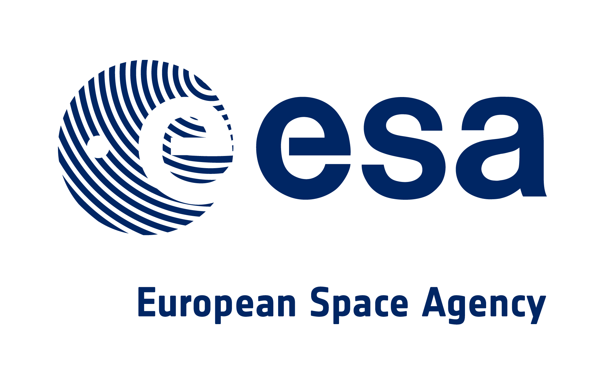
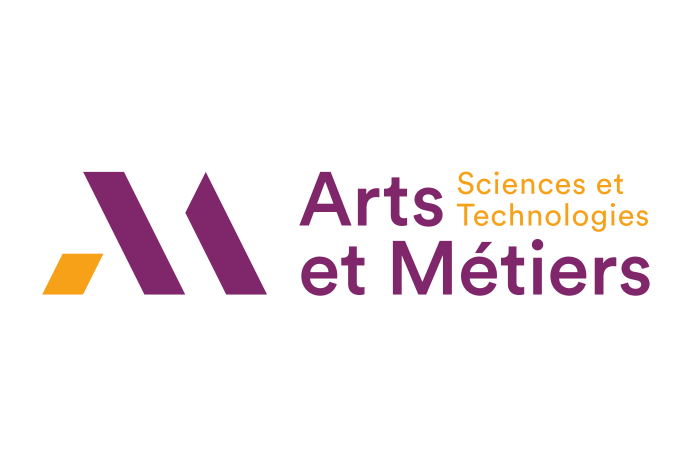
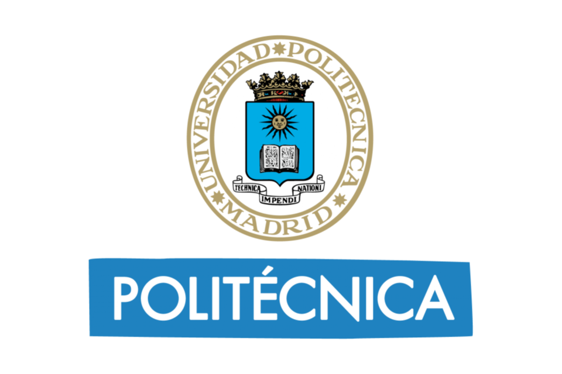
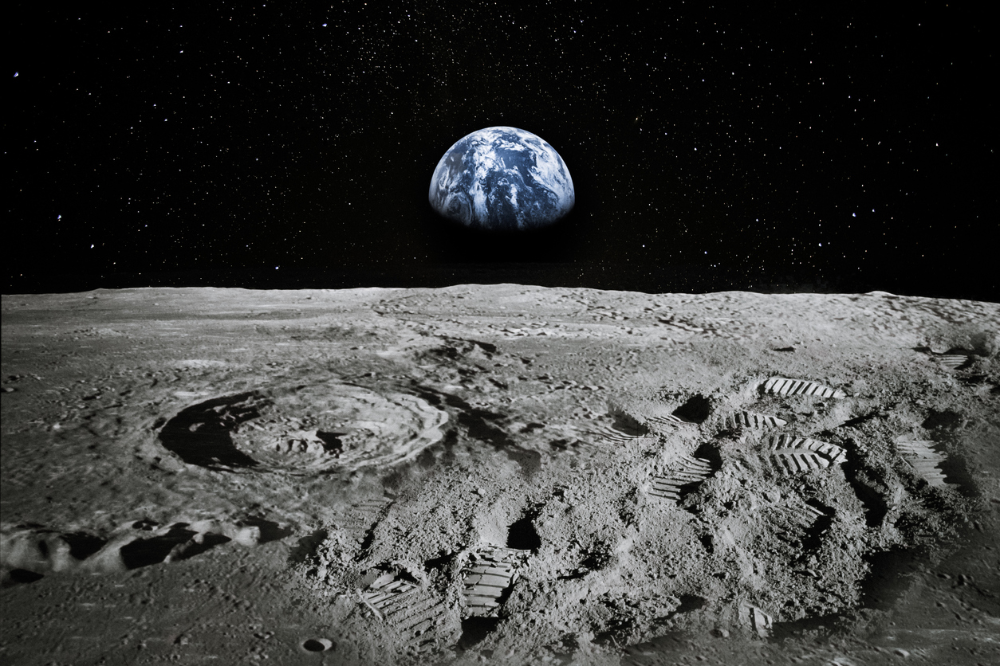
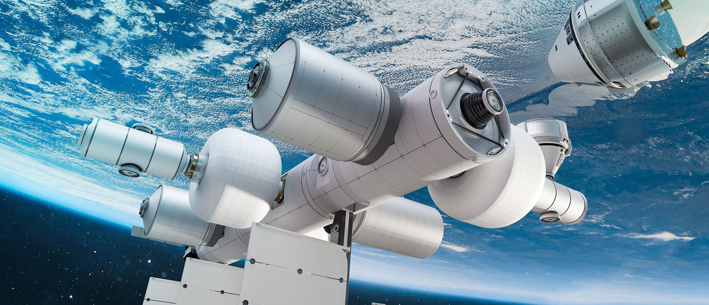
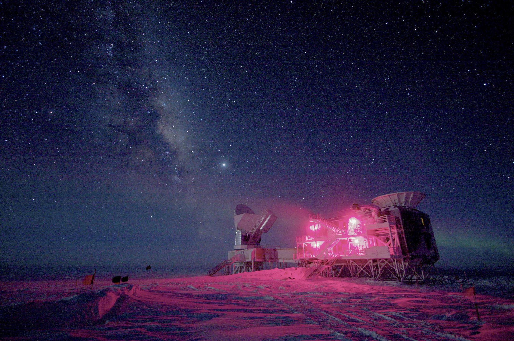
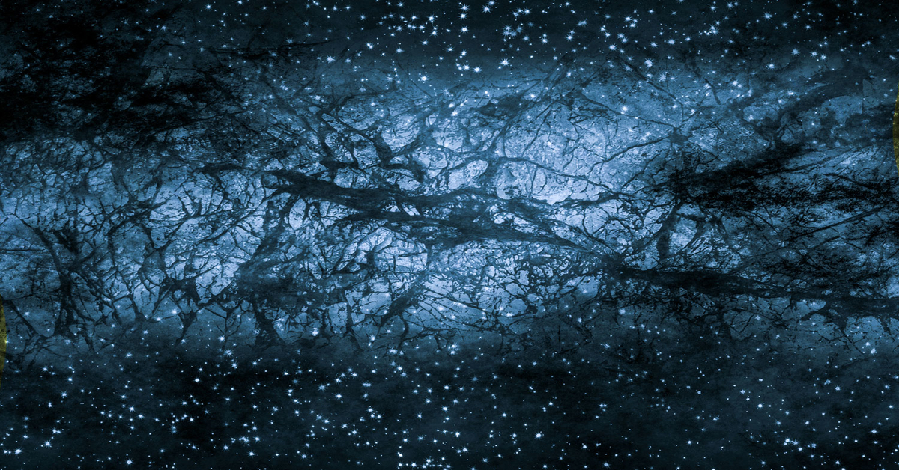
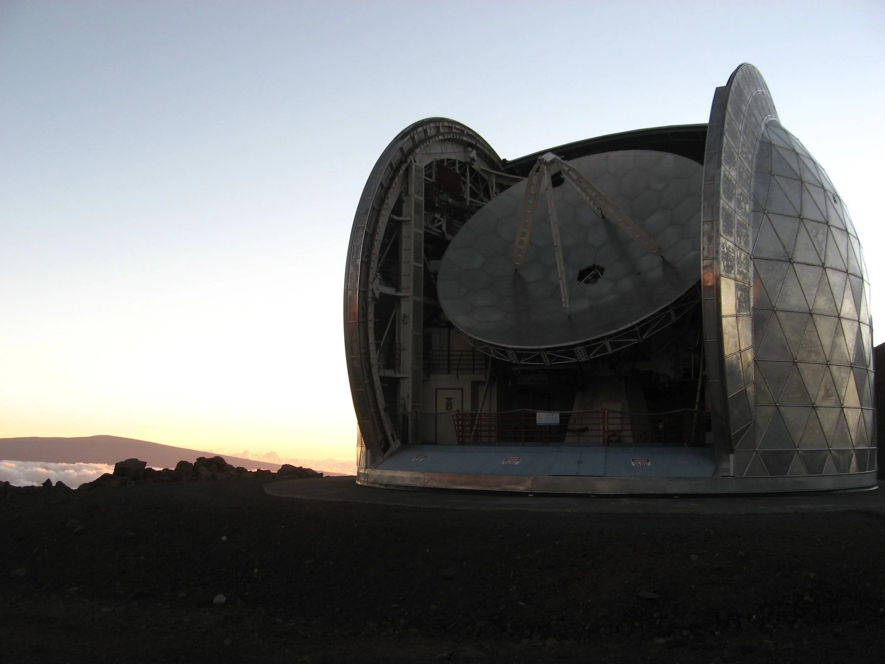

My ORCID
My ORCID
2025
Caltech
arXiv preprint
NEW-MUSIC
Per Aspera Ad Astra
Yann Sadou
PhD Candidate in Aerospace Engineering – Politecnico di Milano
I am a PhD researcher in Aerospace Engineering at Politecnico di Milano, supervised by Prof. Michele Lavagna within the Advanced Space Techonologies for Robotics and Astrodynamics group (ASTRA). My research focuses on digital-twin-driven design and modeling of hybrid surface power systems for the human exploration of the Moon and Beyond. My work funded by ABB group based in Switzerland spans microgrid operations, PMAD architectures, advanced energy storage, and ISRU-coupled power flows. My background combines space-systems engineering and mission architecture, built through repeated involvement in space engineering initiatives: CNES C’Space (student launch/rocket projects), founding the Euroavia Bordeaux student association, the ESA SEEDS program (space-systems engineering training in international teams), and conceptual design work at ISAE-SUPAERO including an on-orbit servicing fleet. n parallel, I developed and verified high-performance instrumentation for harsh environments—such as the BICEP Array experiment deployed at the South Pole—which strengthened my engineering approach to reliability, ntegration, and test. This combination now guides my work on scalable space infrastructures.
Affiliations & training



About Me
Hi there! I’m Yann, a French space engineer with a multidisciplinary background in mechanical engineering, energy engineering, and space systems engineering. My work sits at the crossroads of space hardware development—from cryogenic detector modules and precision structures to power-system components—and mission-driven systems architecture, including digital twins, trajectory design, and end-to-end optimization of space infrastructures. I’m passionate about bridging hands-on engineering with high-level spacecraft and surface-infrastructure design to enable the next generation of Lunar, Martian, and deep-space missions.
A key part of my trajectory was my participation in ESA’s SEEDS program, where I worked on space-system architecture topics including entry–descent–landing and trajectory/mission analysis for large exploration concepts. That experience strengthened my systems view: requirements decomposition, subsystem coupling, and early-phase decision-making under uncertainty—skills that directly translate to infrastructure-scale challenges such as surface power, ISRU integration, and long-duration operations.
Before starting my PhD, I spent two years at Caltech contributing to the engineering of advanced scientific instrumentation under space-like constraints. In particular, I supported the BICEP Array program—an observatory operating at the South Pole, where reliability, thermal design discipline, and repeatable integration processes are essential. My work centered on mechanical and thermal design, integration of sub-Kelvin detector modules, and verification-oriented characterization (optical efficiency testing, FTS-based spectral measurements, RF readout tuning). I also led micro-assembly tasks such as micro-wirebonding inside detector modules, ensuring robust electrical interconnects and build repeatability—experience closely aligned with flight-style I&T practices and configuration control.
Today at Politecnico di Milano, my PhD focuses on hybrid surface power systems for future human exploration of the Moon. I anchor my work in spaceflight heritage—leveraging lessons learned and architectural choices from ISS electrical power and distribution, Orion’s power and avionics development approach, and the evolving NASA Artemis surface architecture, to benchmark requirements and build digital-twin-driven models of surface microgrids, PMAD architectures, energy storage, and ISRU-coupled power flows. The goal is to translate proven ground-system principles into scalable, resilient power infrastructures for Human Planetary Exploration.
Current Focus
High-impact, hardware-grounded space systems
- Cryogenic instrument design for dark matter & CMB experiments.
- Digital twins for lunar & Martian surface power architectures.
- Robust mechanical & thermal design for extreme environments.
- Bridging academic research and mission-class engineering.
Keywords
Space Systems Engineering
Surface Power & Microgrids
Cryogenics
Dark Matter Detectors
CMB Instrumentation
Digital Twins
Thermal–Mechanical Design
Mission Architecture
My selected projects
Hybrid Surface Power Architectures for Lunar & Martian Infrastructures
PhD – Politecnico di Milano
In progress

- Digital twin–driven design of hybrid power systems for large surface infrastructures.
- Integration of microgrids, PMAD networks, advanced storage, and ISRU-based generation.
- Study of robustness, scalability, and mission-level performance for off-world bases.
Human Mars Lander – SEEDS / ESA
Collaborative project with multiple European universities
Systems & Trajectories

- Trajectory and architecture work for human Mars missions, including surface and orbital assets.
- Study of inflatable EDL concepts and mission-level trade-offs.
Station Design – SEEDS / ESA
Collaborative project with multiple European universities
Space Strategy and Business in Space

- Trajectory and architecture work for human Mars missions, including surface and orbital assets.
- Study of inflatable EDL concepts and mission-level trade-offs.
Cryogenic Detector Modules Characterization – BICEP Array
Research Assistant – Caltech
Cryogenics

- Design and analysis of mechanical stacks to maintain controlled preload at cryogenic temperatures.
- Interface design between detector wafers, modules, and cryostat structures.
- Support to integration and testing of CMB detector hardware.
- Cleanroom micro-wirebonding of the modules RF readout.
Dark Matter Detector Instrumentation
Research Assistant – Caltech
Instrumentation

- Mechanical and thermal optimization of cryostat and dilution fridge design for phonon-mediated detectors.
- Support to MKID-based instruments and related optics structures.
MKIDs Instrumentation
Research Assistant – Caltech
Instrumentation

- Mechanical and thermal optimization of cryostat and fridge design for phonon-mediated detectors.
- Support to MKID-based instruments and related optics structures.
Publications
Selected co-authored publications and conference papers (links to full text / DOI).
2025
Caltech
arXiv preprint
NEW-MUSIC
Improved Modeling of Quasi-Static Thermal and Optical Response of Lumped-Element Aluminum Manganese KIDs
2023
ESA
Conference paper
Feasibility study on a crewed Mars lander
2024
ESA
Journal article
New Space
Feasibility Study of a European Commercial Space Station in Low Earth Orbit
They Speak About Me
A selection of my media appearances and interviews.
Contact
I am always happy to discuss collaborations at the intersection of space systems engineering, astrophysics, and cosmology, as well as mentoring and educational initiatives.
The easiest way to reach me is by email: yann.sadou@polimi.it.